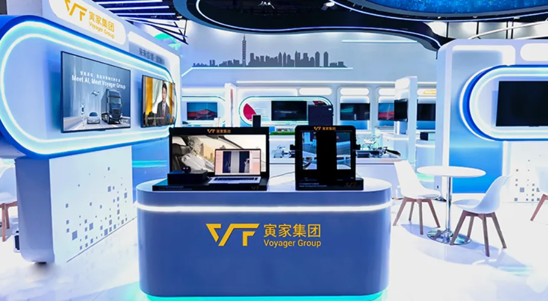
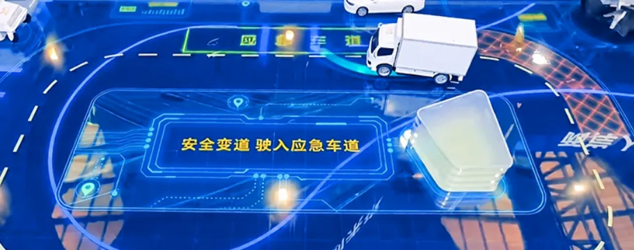
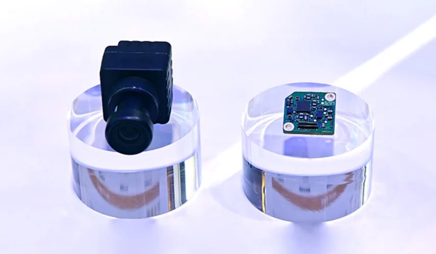
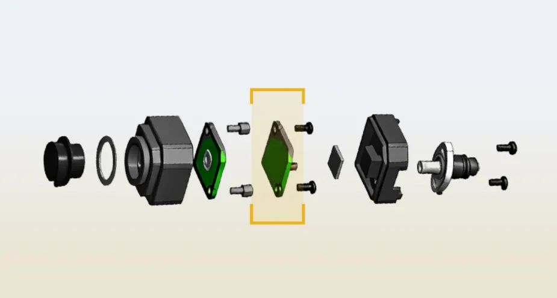
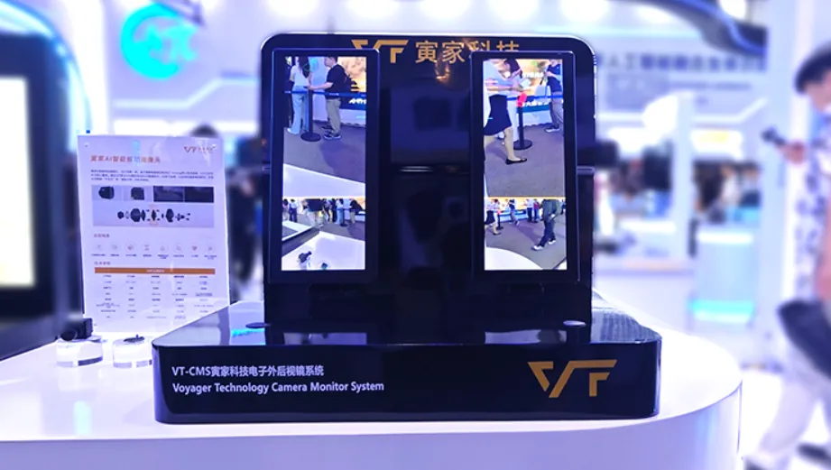
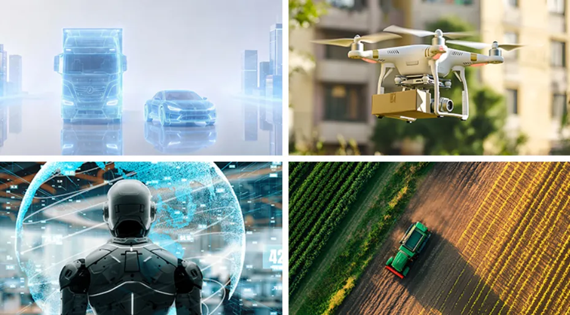

World Artificial Intelligence Cooperation Organization
was founded in Shanghai.Under the theme "AI Partnership for a Brighter Future",This year's conference adopts a linkage modelcovering three venues and four pavilionsThe total exhibition area exceeds 100,000 square metersEnterprises from all industries gather forthis grand event to discusshow artificial intelligence canAdvance for good, benefit humanity andachieve shared development.
Brought by Voyager Group
Three Highlight Sections,Brand-New Themes
What's AI-Powered New for Voyager Group

New Topic, New Exhibits, New ScenariosWe showcase mass-production solutions
for Physical Albuilt around "Eyes Brain Body"
Covering the full link of"Perception Decision-Making Control"Voyager Group's blockbuster AI showcase is unfolding...
New Topic: Physical Al
How can digital Al scale up to the real physical world?
What reference value does vehicle intelligence
hold for other general intelligent agents?
To implement Al within physical spaces,
the core relies on a complete closed loop of
"Eyes, Brain, Body".
Based on this logic,
Voyager Group officially launches
the integrated mass-production
Physical Al solution of "Eyes · Brain · Body":
Eyes = Intelligent Perception
Body = Execution & Control
Brain = Intelligent Decision-Making
Drawing on mature automotive
intelligent perception technologies
(VT-Sensing, VT-Navi)
and intelligent decision-making
& control technologies (VT-Vulcane),
Voyager Group has secured nearly
4 million automotive order backlogs.
Supported by multiple R&D
and production bases nationwide,
Voyager's automotive Al intelligent solutions are
automotive-grade, deployable and mass-producible!
Al is not merely a theoretical blueprint;
it is being realized in every
driving and riding journey of yours.

New Exhibits:
Multiple Launches!
01
Voyager Intelligent Application Digital Sphere
It integrates vehicle intelligence, drones,agricultural robots and working robots on
a digital sand table,
showcasing the Group's comprehensive
layout in a condensed form,and vividly demonstrating the practical applications ofautomotive technologies in smart agricultureand industrial sectors.

Night driving on highway, abnormal
tire pressure detected
How do Al algorithms assist decision-making
and control
the vehicle to pull over safely?

Mowing in woodlands with complex terrainHow to leverage "integrated vision and computing"to plan routes for autonomous operation?

How do they yield to each other
Two robots meet at a crossroad in industrial park
via algorithmic game theory for smooth passage?
02
Al Intelligent Perception Cameras
Struggling with blurry night footage and
indistinct details?
Voyager Group's Al intelligent perception solution
features a tiny extra chip compared
with ordinary cameras.


Built on a mature high-definitionvisual hardware system,
it focuses on environment recognition
and safety perception.
Combined with Al technology, it helps resolve
various complex lighting imaging challenges of cameras.
It adapts to visual collection for scenarios
including Intelligent Vehicle, Low-Altitude Economy,
and Embodied Robotics.We look forward to the full potential ofthe Al intelligent perception solution.
03
VT-CMS Camera Monitor System
VT-CMS solution is built upon high-definition imaging
and image correction technology.It utilizes Al image optimization algorithmsto resolve visibility challenges under complexoperating conditions.Backed by mature automotive-grade
technical experience,its miniaturized imaging modules are fullycompatible with airborne monitoring devicesincluding drones and embodied robots,
supporting high-definition image acquisitionand real-time video transmission.
VT-CMS complies with international regulations and technicalstandards such as GB15084-2022 and Euro ECE R46 certification.

04
VT-DMS Driver Monitoring System
Powered by precise human feature capture technology,
VT-DMS detects real-time facialconditions, gaze angles,limb features and other human states,and evaluates and classifies driver alertness levels.It delivers visual and audible alerts viahuman-machine interface when necessary.The underlying human perception algorithmscan be extended to applications including drones,as well as human-machine interactionand intelligent following scenariosfor industrial and service robots.
VT-DMS complies with (EU) 2019/2144 (GSR 2.0) regulations regardingDDAW/ADDW/Cybersecurity for whole vehicle certification

New Scenarios:Beyond Vehicle Intelligence
Passenger & Commercial Vehicle Intelligence
We have deployed intelligent perceptionand control technology solutions,helping reduce driving blind spots,warn of driving risks and boost driving safety.
Airborne Perception for Low-Altitude Inspection Drones
We reuse lightweight visual imaging andpositioning technologiesto capture high-definition aerial footage and enableautonomous environment recognition, cutting R&Dand verification costs for low-altitude equipment.
Industrial & Service Embodied Robots
We transfer core underlying capabilitiesincluding human recognition, control and scheduling,supporting human-following, obstacle avoidance
and collaborative operation.
Intelligent Operation for Agricultural Robots
We reuse environment perception andreal-time control technologiesto support agricultural robots in field environmentalmonitoring and autonomous operation.

On the opening day of the conference, PanXianzhang, Deputy Director of the TaiwanAffairs Office of the State Council, and hisentourage visited Voyager Group's booth.They gained in-depth hands-on experienceof the Group's integrated mass-productionPhysical Al solution covering the "Eyes Brain Body" chain, and learned in detailabout cutting-edge products and technologiessuch as vehicle-mounted perception andcross-industry intelligent equipment. In-depthexchanges were held on industry topicsincluding the industrial implementation ofPhysical Al and cross-industry technologyreuse.
On the same day, Jin Mei, Director of theTaiwan Affairs Office of the Shanghai MunicipallPeople's Government, led a delegation tothe booth and held a cordial discussion withBrian Chen, Founder & CEO of Voyager Group.The two sides fully exchanged views oncore topics such as Al technological innovationand the commercial rollout of automotive-gradetechnologies, and thoroughly exploreddevelopment paths for empowering thereal economy with artificial intelligence.The onsite communication was warm andharmonious.
Aligned with the national"Al+" developmentstrategy, this WAIC event charts an open,win-win, secure and controllable developmentpath for global Al innovation and governance.Actively responding to national strategiesand the trends of the times, Voyager Groupunveiled its integrated mass-productionPhysical AI solution of "Eyes · Brain · Body"at this exhibition. The solution connectsthe full chain of intelligent perceptiontechnologies (VT-Sensing, VT-Navi) andintelligent decision-making & controltechnologies (VT-Vulcan), facilitating themigration and implementation of matureautomotive-grade technologies acrosslow-altitude, industrial and agriculturalscenarios. We strive to advance Al forgood, benefit humanity and drive shareddevelopment.
——Founder & CEO of Voyager Group Brian Chen